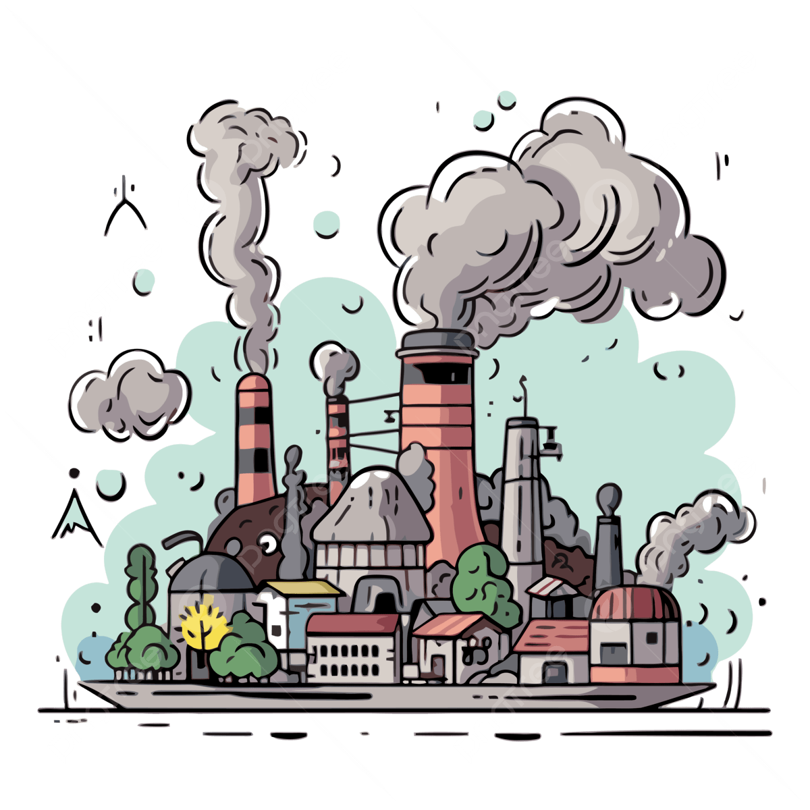
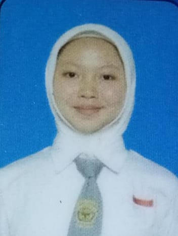
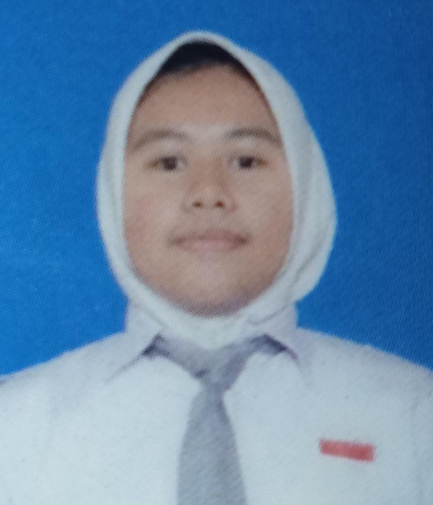

"Setiap barang yang sudah tidak dipakai kami olah menjadi kerajinan tangan yang bernilai tinggi yang membantu mengurangi limbah plastik sekaligus memperindah rumah anda"

Website ini dibuat untuk memberikan edukasi tentang pengolahan sampah menjadi kerajinan, meningkatkan kreativitas masyarakat, serta mendukung upaya mengurangi limbah dan menjaga lingkungan.
Pencemaran lingkungan adalah rusaknya alam akibat ulah manusia seperti sampah dan polusi yang merusak udara, air serta tanah.
Read moreInovasi kreatif dalam mengolah limbah plastik seperti jerigen menjadi rak susun yang bermanfaat dan bergaya unik.
Read moreKerajinan ramah lingkungan yang mengajarkan pentingya daur ulang untuk keindahan dan kelestarian alam.
Read moreKarya daur ulang yang tidak hanya berguna, tetpi juga membantu mengurangi pencemaran plastik.
Read moreDari stik sederhana ini menjadi lampu yang memmancarkan keindahan dan kreativitas tanpa batas.
Read morejerigen bekas sering dianggap sampah, padahal bisa diolah kembali menjdai produk yang berguna dan menilai kembali
Read moreRecylcling plastic jerrycans helps protect the environment and turns waate into something valuable
Read moreBelajar angka bukan sekedar meghitung, tapi juga melatih cara berpikir logis dan kreatif.
Read moreKerajinan dari limbah menunjukkan bahwa menjaga lingkungan bisa dilakukan dengan cara yang indah dan bermanfaat.
Read moreAnggota 1
Halo, saya hasto.Saya membuat rak susun dari bahan daur ulang untuk membantu mengurangi pencemaran lingkungan.

Anggota 2
Perkenalkan, saya nadiya.Saya ingin menunjukkan bahwa limbah bisa diolah menjadi kerajinan yang berguna, seperti rak susun.

Anggota 3
Hai,saya zhafira.Saya web ini berisi informasi tentang pencemaran lingkungan dan cara mengurangi dampaknya melalui kerajinan rak susun dari bahan daur ulang.